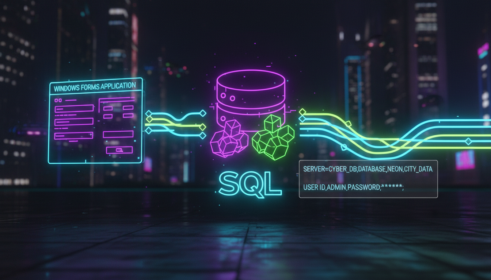

SqlConnection, ConnectionString, ADO.NET

using namespace System::Data::SqlClient;
// Рядок підключення (SQL Server LocalDB)
String^ connString = "Server=(localdb)\MSSQLLocalDB;"
"Database=MyDatabase;"
"Integrated Security=true;";
// Відкриття з'єднання
SqlConnection^ conn = gcnew SqlConnection(connString);
try {
conn->Open();
MessageBox::Show("З'єднання встановлено!");
// Виконання запиту
SqlCommand^ cmd = gcnew SqlCommand(
"SELECT COUNT(*) FROM Students", conn);
int count = (int)cmd->ExecuteScalar();
lblStatus->Text = "Кількість записів: " + count;
}
catch (SqlException^ ex) {
MessageBox::Show("Помилка SQL: " + ex->Message);
}
finally {
if (conn->State == ConnectionState::Open) {
conn->Close();
}
}SqlConnection^ conn = gcnew SqlConnection(connString);
SqlCommand^ cmd = gcnew SqlCommand(
"SELECT * FROM Students WHERE Age > @age", conn);
cmd->Parameters->AddWithValue("@age", 18);
try {
conn->Open();
SqlDataReader^ reader = cmd->ExecuteReader();
while (reader->Read()) {
int id = reader->GetInt32(0);
String^ name = reader->GetString(1);
int age = reader->GetInt32(2);
listBox->Items->Add(String::Format("{0}: {1}, {2} років",
id, name, age));
}
reader->Close();
}
catch (Exception^ ex) {
MessageBox::Show(ex->Message);
}
finally {
conn->Close();
}